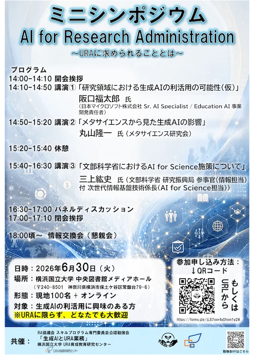

NEW! 6/30 14:00〜 生成AIとURA業務ミニシンポジウムのお知らせ
この度、横浜国立大学 研究推進機構 URA育成教育研究センターとの共催にて、 2026年6月30日（火）14時より、ミニシンポジウム「AI for Research Administration ～URAに求められることとは～」を ハイブリッド形式（会場：横浜国立大学常盤台キャンパス）で開催する運びとなりましたのでお知らせいたします。
登録フォーム：イベント申込ページ
生成AIは、研究活動そのものだけでなく、研究支援・研究マネジメント・研究組織運営のあり方にも大きな影響を与えつつあります。 URAや大学の事務職員などの研究支援者には、AIを単なる効率化ツールとして使うだけでなく、 多様な業務を再整理し、研究者・組織・政策・社会をつなぐための新しい視点が求められています。
本ミニシンポジウムでは、3名の講師をお呼びし、生成AIの研究領域における利活用の可能性、メタサイエンスから見た生成AIの影響、 文部科学省におけるAI for Science施策を取り上げます。 そのうえで、AIとともに協働する時代に、URAや研究支援者に何が求められるのかを議論します。
イベント概要
生成AIとURA業務ミニシンポジウム
「AI for Research Administration ～URAに求められることとは～」
- 日時：2026年6月30日（火）14:00〜17:10
- 場所：横浜国立大学 中央図書館 メディアホール（〒240-8501 神奈川県横浜市保土ケ谷区常盤台79-6）
- 形態：現地100名 + オンライン
- 参加費：無料 ※情報交換会は別途
- 対象：URA、大学職員、研究推進・研究支援に関わる方、AI for Research Administrationに関心のある方
- 内容：講演、パネルディスカッション、情報交換会（懇親会）
- 情報交換会（懇親会）：18:00頃〜 ※定員に達し次第、早めに締め切る可能性があります。

プログラム
| 14:00–14:10 | 開会挨拶 |
|---|---|
| 14:10–14:50 |
講演①「研究領域における生成AIの利活用の可能性（仮）」 日本マイクロソフト株式会社 Sr. AI Specialist / Education AI 事業開発責任者 阪口福太郎 氏 |
| 14:50–15:20 |
講演②「メタサイエンスから見た生成AIの影響」 メタサイエンス研究会 丸山隆一 氏 |
| 15:20–15:40 | 休憩 |
| 15:40–16:30 |
講演③「文部科学省におけるAI for Science施策について」 文部科学省 研究振興局 参事官（情報担当）付 次世代情報基盤技術係長（AI for Science担当） 三上紘史 氏 |
16:30–17:00 | パネルディスカッション |
| 17:00–17:10 | 閉会挨拶 |
| 18:00頃〜 | 情報交換会（懇親会） |
※プログラムは変更となる場合があります。
登壇者
-
阪口福太郎 氏
日本マイクロソフト株式会社 Sr. AI Specialist / Education AI 事業開発責任者 -
丸山隆一 氏
メタサイエンス研究会 -
三上紘史 氏
文部科学省 研究振興局 参事官（情報担当）付 次世代情報基盤技術係長（AI for Science担当）
こんな方におすすめです
- 生成AIを研究支援業務にどのように活用できるかを考えたい方
- URA業務や大学事務業務の効率化・高度化に関心のある方
- AI for Scienceや研究政策の動向に関心のある方
- メタサイエンスの観点から生成AIの影響を考えたい方
- AIと協働する時代のResearch Administrationの役割を議論したい方
皆さまのご参加をお待ちしております。